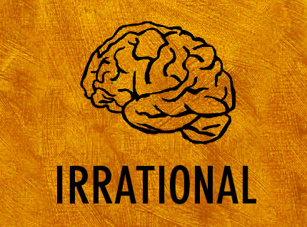

Today, we face a new threat of irrational thinking. Thoughts and facts fed into our brains often corrupt our way of thinking. This leads to the loss of self-control and we end up thinking unimaginable things. A similar incident is described in the story So Much Water, So Close to Home by Raymond Carver. This analysis critically examines the character of Claire, and to what extent her irrational thinking had taken her to suspect her husband.
Irrational Thinking
Source: Blog